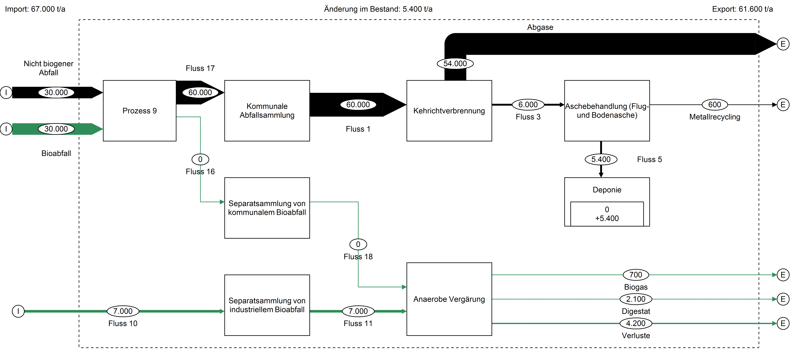
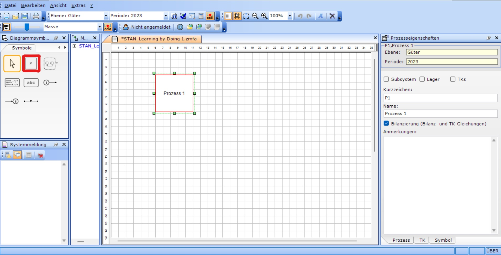
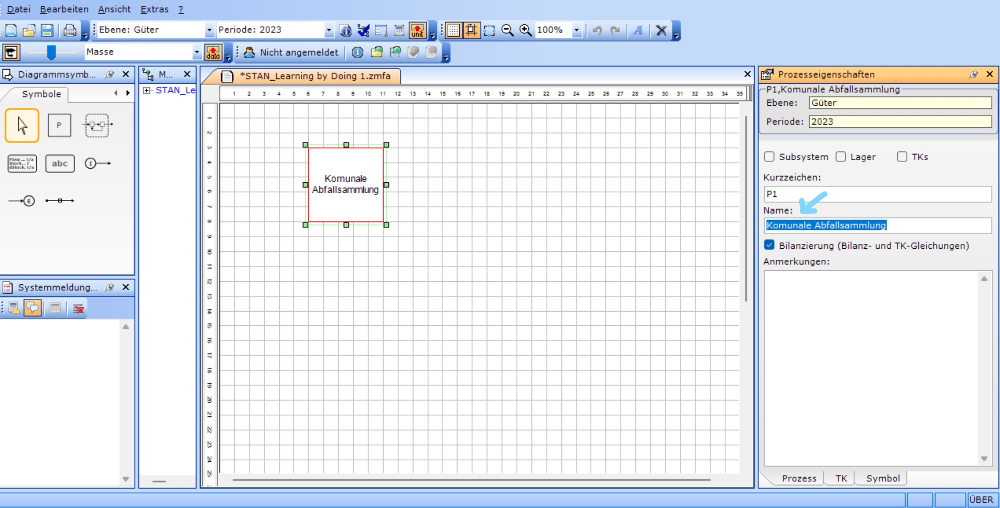
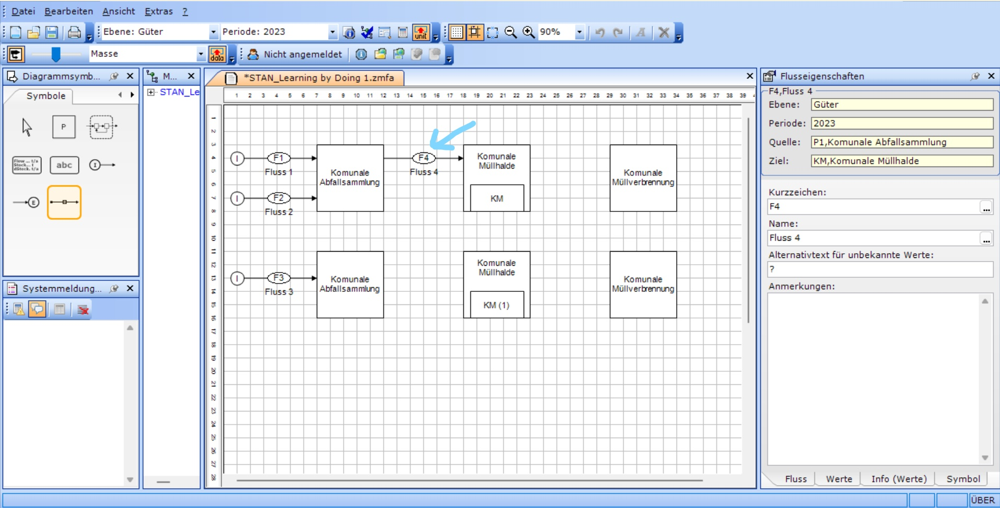
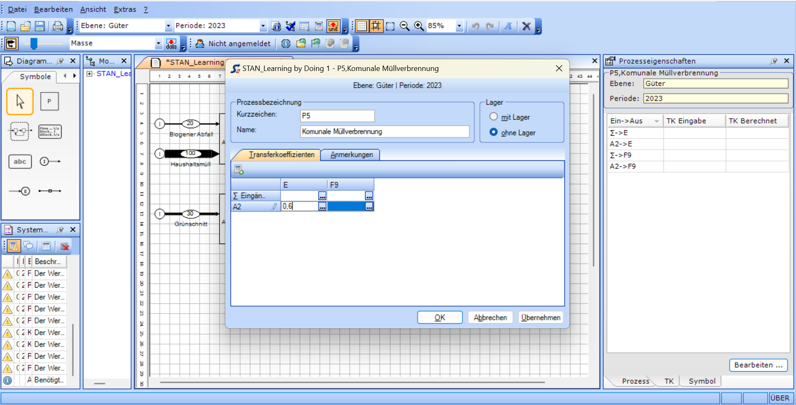
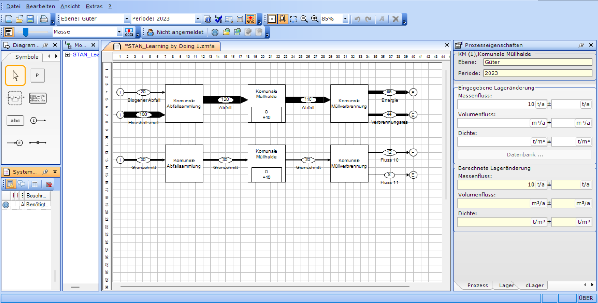
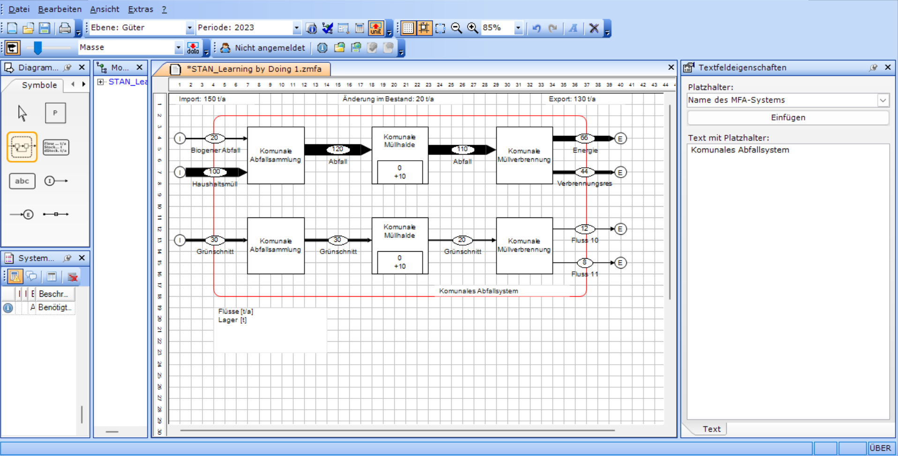
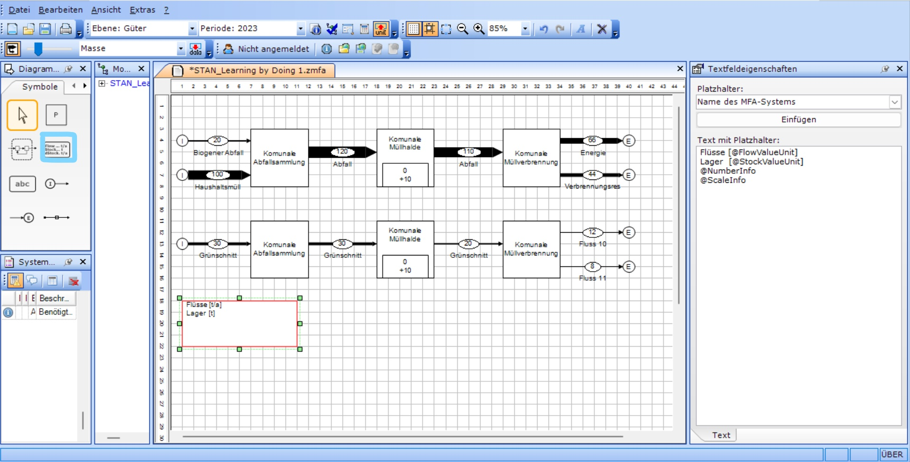
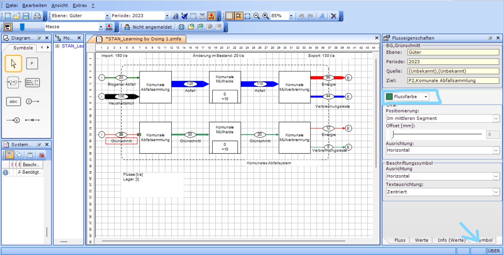

Learning-by-doing
Ziel
Als praktisches Beispiel modellieren wir ein vereinfachtes Abfallmanagement einer Gemeinde über ein Jahr. Das derzeitige System besteht aus einer kommunalen Abfallsammlung mit Kehrichtverbrennung ohne Separatsammlung biogener Abfälle. Daneben werden industrielle biogene Abfälle separat gesammelt und mittels anaerober Vergärung behandelt. Das derzeitige System ist in der untenstehenden Abbildung dargestellt.
Wir werden zunächst das derzeitige System in STAN modellieren und danach Optionen der zusätzlichen Separatsammlung von kommunalem Bioabfall.

Schritt-für-Schritt-Anleitung
Schritt 1: STAN installieren
Installieren Sie STAN, nähere Angaben finden Sie hier.
Schritt 3: STAN öffnen und speichern
Öffnen Sie STAN und speichern Sie das Projekt in einem geeigneten Ordner. Es wird eine Datei mit der Projektendung .zmfa generiert.
Schritt 4: Der erste Prozess
Nun zeichnen Sie als ersten Prozess die kommunale Abfallsammlung. Wählen Sie dazu in der Symbolleiste das Symbol P (rot markiert) aus und zeichnen Sie ein Rechteck (“Prozess 1”). .

Benennen Sie den Prozess “kommunale Abfallsammlung”. Wählen Sie dazu den Prozess aus und ändern Sie im Fenster Prozesseigenschaften den Namen.

Schritt 5: Weitere Prozesse und Prozess mit Lager
Nun erweitern Sie die MFA mit weiteren Prozessen. Fügen Sie rechts des prozesses “Kommunale Abfallsammlung” die Prozesse “Kehrichtverbrennung” und “Aschebehandlung (Flug- und Bodenasche)” ein. Unterhalb der “Aschebehandlung (Flug- und Bodenasche)” fügen Sie den Prozess “Deponie” ein.
Fügen Sie links des Prozesses “Kommunale Abfallsammlung” den Prozess “Trennung von Biomüll” ein. Diesen Prozess nutzen wir später, um die Trennung zwischen Biomüll und Restmüll zu simulieren. Im IST-Modell gehen 100% des Biomülls in die kommunale Abfallsammlung.
Die Deponie repräsentiert ein Lager, das sich über die Zeit füllt. Wählen Sie daher den Prozess “Deponie” aus und setzen Sie in den Prozesseigenschaften ein Häkchen bei Lager.

Schritt 6: Erste Flüsse zeichnen
Nun zeichnen Sie die ersten Flüsse zwischen den Prozessen.
Zunächst können Sie den Importfluss “Nichtbiogener Abfall” von ganz links hin zum Prozess “Trennung von Biomüll” ziehen. Der Importfluss überschreitet die Systemgrenze, d.h. von Prozessen welche uns in der Fragestellung nicht interessieren (z.B. Konsun von Gütern) und ausserhalb der Systemgrenze sind hin zum ersten Prozess innerhalb der Systemgrenze.
.jpg)
Verbinden Sie nun die Prozesse mit Flüssen wie in der Abbilung unten dargestellt. Flüsse zwischen Prozessen sind natürlich keine Importflüsse sondern “normale” Flüsse innerhalb der Systemgrenze.

Ausgehend von der “Aschebehandlung (Flug- und Bodenasche)” erstellen Sie nun als ersten Exportfluss “Metallrecycling”. Hierbei handelt es sich um das rückgewonnene Metall aus der Aschebehandlung welche Reyclingprozessen zugeführt werden. Diese Recyclingprozesse interessieren uns hier nicht weiter, da wir uns mit biogenen Abfällen beschäftigen. Daher sind Reyclingprozesse für Metall in diesem konkreten Fall ausserhalb der Systemgrenze.
Nachdem alle Flüsse gezeichnet wurden, können Sie nun alle Flüsse über das Fenster Flusseigenschaften benennen.
Ergänzen Sie nun alle Prozelle und Flüsse, bis Ihr Modell folgendermassen aussieht.
-01.png)
Schritt 7: MFA-System: Eingabe der Werte für die Materialflüsse
Als nächstes beginnen wir mit der Eingabe der “Daten” für unser Modell. Dazu:
- Klicken Sie auf den ersten importierten Materialfluss oben rechts und klicken Sie dann auf Werte im Eigenschaftenfenster (roter Pfeil im Bild unten).
Im Werte-Fenster können alle Massenströme berechnet und eingegeben werden. Wenn Sie Dichte und Volumen eingeben, können Sie anschließend die Masse berechnen. Werte sind immer entweder berechnet oder eingegeben, zusätzlich kann der Standardfehler eingegeben werden (dazu später mehr).
- Geben Sie nun einen Wert (20) unter Massenstrom ein (blauer Pfeil im Bild unten).
- Geben Sie für den Fluss Hausmüll den Massenstromwert 100 und für Grünschnitt den Massenstromwert 30 ein.
- Sie können die Pfeildicke des Flusses im Shanky Kontrol Regler anpassen (grüner Pfeil) oder die Funktion, dass die Massenflüsse unterschiedlich dick sind, ganz ausschalten (Iconlinks neben dem Regler).

Schritt 8: MFA-System: Lager bilden
Im nächsten Schritt wird das Lager gebildet. Dazu:
- Klicken Sie auf den Prozess mit Lager
Es gibt 2 Fenster für die Eingabe von Lagerwerten. Das erste heißt “Lager” und gibt die Masse der bereits im Lager vorhandenen Mengen an. Das zweite heißt “dLager” und beschreibt die Veränderung des Lagers pro Zeitperiode. Als Beispiel können wir uns einen Getreidespeicher vorstellen, in dem 2 Tonnen gelagert sind (Lager) und der sich pro Jahr um 1 Tonne füllt (dLager).
In unserem Beispiel gehen wir davon aus, dass die Deponie neu gebaut wurde und daher noch kein vorhandenes Lager hat, sich aber um 10 Tonnen pro Jahr füllen wird.
- Klicken Sie auf “dLager” und geben Sie im Massenstrom 10 ein.

Schritt 9: MFA-System: Transkriptionsfaktoren
Im nächsten Schritt bilden wir einen TK-Prozess, dies dient dazu, dass wir zwei austretende Ströme haben, diese wollen wir nun so eingeben, dass die Flüsse mit 60% in die Atmosphäre gleichmäßig auf beide Ströme verteilt sind. Unabhängig von der absoluten Menge des Inputs
Wählen Sie den Prozess Müllverbrennung und aktivieren Sie im Prozesseigenschaften-Fenster das TKs-Feld.
Dann geben wir den TK-Faktor ein. Dazu klicken wir auf das TK-Feld im Eigenschaften-Fenster und dann auf “Bearbeiten…”. Wir weisen dem Output-Fluss “Atmosphäre (A)” einen Anteil von 60% der Output-Flüsse zu.
.png)

Schritt 10: MFA-System: Berechnen
Nun sind alle wichtigen Rechengrössen zum Berechenen des Models eingegeben (Inputs, Lagerzuwachs und Verteilfaktoren). Im nächsten schrit Berechenen wir die fehelenden Flussgrössen und Werte in unserem Model.
- Klicken sie hierfür auf das Berechenen Icon oben Zentral in der Symbolleiste (Sihe Bild unten).

Schritt 11: MFA-System: Systemgrenze
Im vorletzten Schritt wird nun die Systemgrenze gezeichnet. Klicken Sie dazu auf das Symbol Systemgrenze und ziehen Sie es per Drag & Drop in unser MFA-System, so dass alle Import- und Exportflüsse außerhalb und alle Prozesse und systeminternen Flüsse innerhalb der Systemgrenze liegen.

Schritt 12: MFA-System: Inhaltsverzeichnis und optische Anpassungen
Im letzten Schritt könenn wir unser MFA-System optisch anpassen. Dazu können wir die Farben der Prozesse und Flüsse ändern und eine Legende einfügen.
- Für die Legende wählen Sie das Legendensymbol (im Bild blau markiert) und fügen es per Drag and Drop in das Modell ein.

- Um die Farbe anzupassen, klicken Sie auf den entsprechenden Prozess oder Fluss und ändern Sie die Flussoder Prozessfarbe im Eigenschaftenmenü unter “Symbole”.
